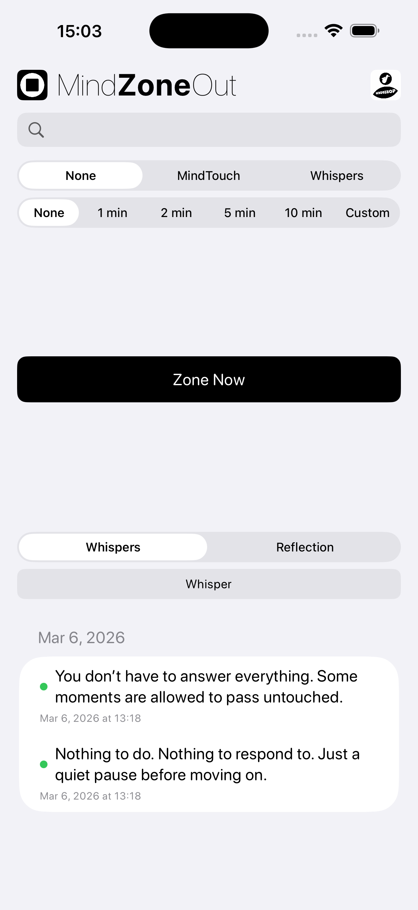
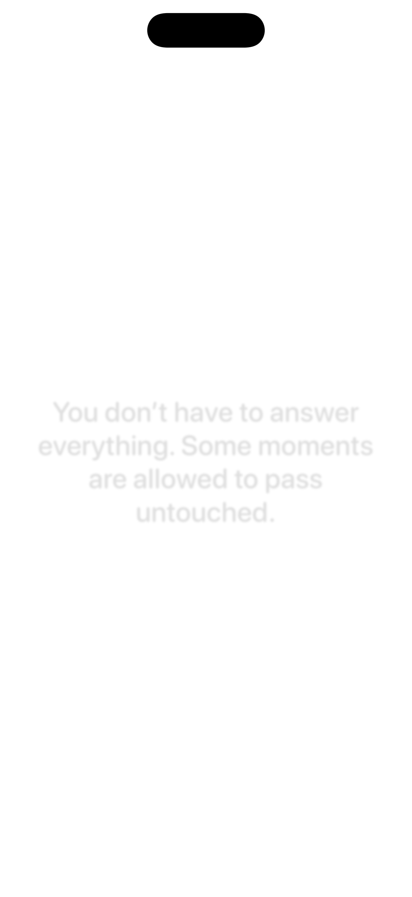

MindZoneOut is an early-phase settling tool.
It provides a quiet visual space where thoughts can settle before the next step.
Version 1.9 adds Manual Shout for sending entries directly to MindShoutOut, Send to Recipe for sending entries directly into MindEntry recipes, updated About and company information, and additional interface refinements.
An empty wall environment.
Optional Whisper and Reflection features allow thoughts to appear and be observed without escalation.


Used when additional analysis increases friction.
MindZoneOut can work together with other MINDBEBOP tools.
Thoughts can move from scheduling into Zone, from Zone into Flip, from Zone into Shout, or directly into a MindEntry Recipe.
This allows a thought to settle before deciding whether another step is needed.
All integrations are optional. MindZoneOut can still be used as a standalone quiet space.
Whispers and Reflections can be sent directly into compatible MindEntry Recipes.
A thought can move naturally from observation into a structured sequence when needed.
Recipes may include Stateful Recipes, CogniHacks, Hallway Mode, or other MindEntry flows.
Many thoughts still begin and end inside MindZoneOut.
Whispers and Reflections can be sent directly to MindShoutOut.
Sometimes a thought does not need more reflection. It needs a future time.
Manual Shout allows a thought to move directly into scheduling and storage.
Manual Shout complements Manual Flip, MindTouch, Send to Recipe, and Whisper workflows.
MINDBEBOP introduces a modular architecture for structuring the Mental Background layer, helping you reclaim attention quietly consumed by unresolved thoughts.
Copyright © 2026 MINDBEBOP — All rights reserved.